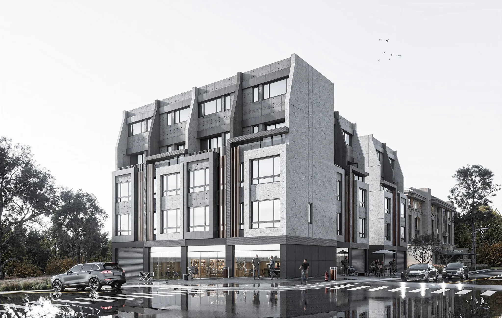
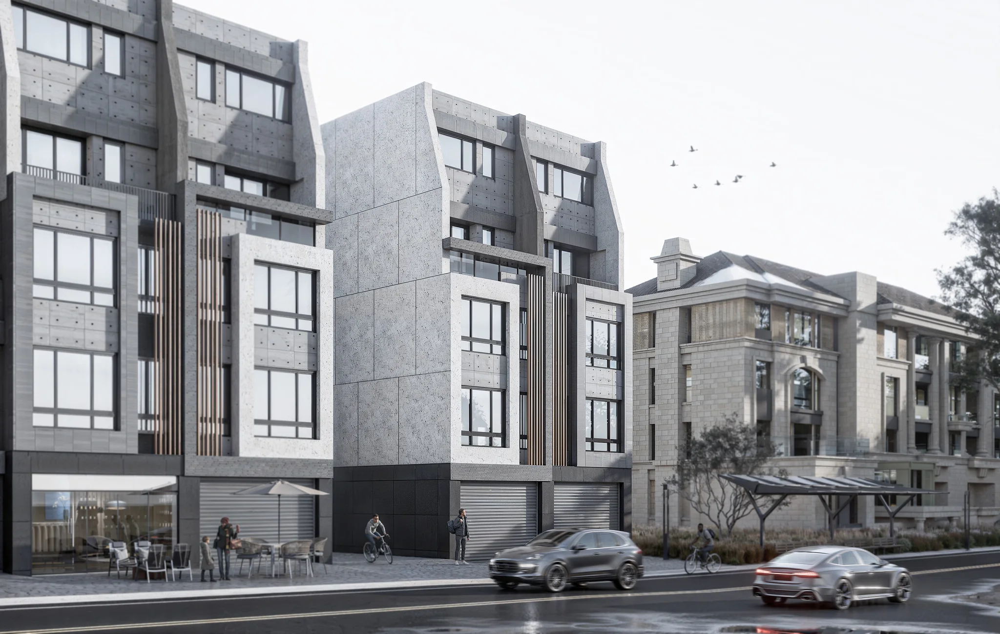
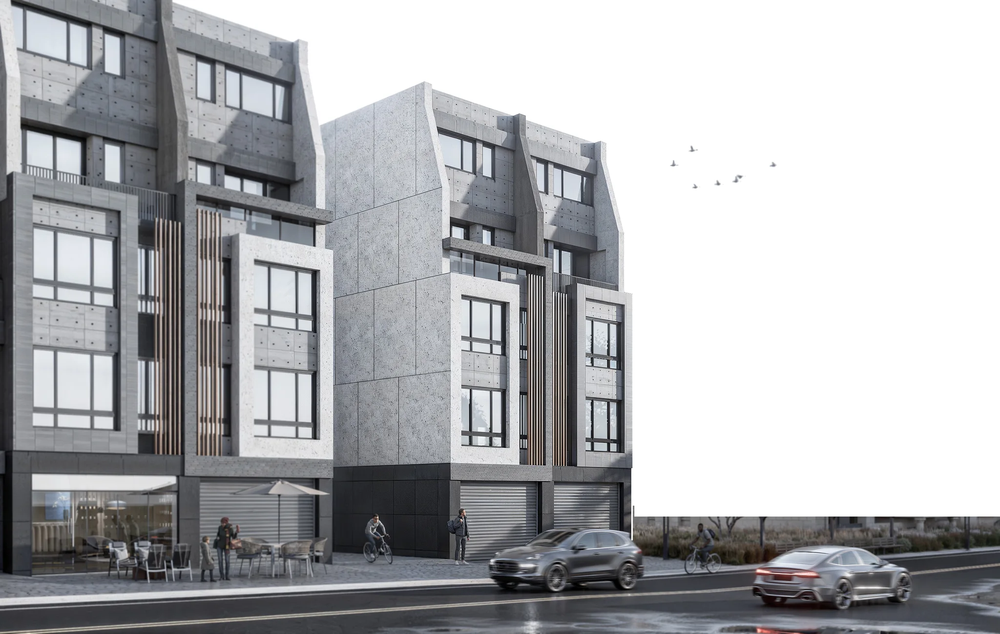

過往任職專案案例 05 / 05
大同案 · 十五戶透天住宅
Datong · Fifteen Residences
住宅尺度、材料與街區脈絡。

01作品背後
設計策略
前期規劃：產品定位、量體與平面策略、成本與工序可行性；接著是外觀設計整合：立面風格、材料選擇與比例，並負責進度節點、品質標準與設計／代銷／工務之間的協調。
與研究的關聯
這個專案再次說明：環境與材料的現實，必須在設計最早期就被考慮。
- 年份
- 2024–
- 地點
- 苗栗 · 竹南
- 角色
- 開發端專案主要負責（創辦人，任職於前公司期間）
- 類型
- 住宅 · 十五戶透天
- 背景
- 十五戶透天 · 已取得建照（2026 年初狀態）
▲ 作品歸屬
本案為創辦人過往任職期間之專案參與，屬前任職公司之工作，並非 RSA 承攬案，亦未宣稱使用 RSA 進行環境分析。圖片為該專案之設計模擬圖。
02設計視角設計模擬圖



03創辦人的角色開發端專案主要負責（創辦人，任職於前公司期間）
工作範圍
01
前期規劃
產品定位、量體／平面策略討論、成本與工序可行性
02
外觀設計
立面風格整合、材料選擇協作、視覺節奏與比例優化
03
執行管理
進度節點規劃、品質標準建立、現場溝通與文件管理
04
專案整合
設計／代銷／工務窗口整合，議題追蹤與決策落地
成果
前期規劃完成、設計整協作進行中、銷售與施工準備階段（2026 年初狀態）。
▲ 作品歸屬
以上工作為創辦人任職於住宅開發公司期間所負責，時間早於 RSA 成立；RSA 公司本身未參與本案。法定建築設計與簽證不在此角色範圍內。